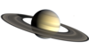
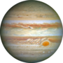
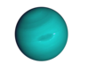
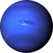
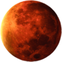
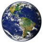
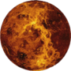
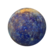

ASTROFLIX
-
Saturno
Saturno é o sexto planeta a partir do Sol e o segundo maior do Sistema Solar atrás de Júpiter. Pertencente ao grupo dos gigantes gasosos, possui cerca de 95 massas terrestres e orbita a uma distância média de 9,5 unidades astronômicas.
-
Jupiter
Júpiter é o maior planeta do Sistema Solar, tanto em diâmetro quanto em massa, e é o quinto mais próximo do Sol. Possui menos de um milésimo da massa solar, contudo tem 2,5 vezes a massa de todos os outros planetas em conjunto.
-
Urano
Urano (Úrano em Portugal ) é o sétimo planeta a partir do Sol, o terceiro maior e o quarto mais massivo dos oito planetas do Sistema Solar. Foi nomeado em homenagem ao deus grego do céu, Urano, o pai de Cronos (Saturno) e o avô de Zeus (Júpiter).
-
Netuno
Netuno ou Neptuno (AO 1990: Netuno ou Neptuno) é o oitavo planeta do Sistema Solar, o último a partir do Sol desde a reclassificação de Plutão para a categoria de planeta anão, em 2006. .
-
Marte
Marte é o quarto planeta a partir do Sol, o segundo menor do Sistema Solar. Batizado em homenagem ao deus romano da guerra, muitas vezes é descrito como o "Planeta Vermelho", porque o óxido de ferro predominante em sua superfície lhe dá uma aparência avermelhada.
-
Terra
A Terra é o terceiro planeta mais próximo do Sol, o mais denso e o quinto maior dos oito planetas do Sistema Solar. É também o maior dos quatro planetas telúricos. É por vezes designada como Mundo ou Planeta Azul. ar de milhões de espécies de seres vivos..
-
Vênus
Vénus é um dos quatro planetas terrestres do Sistema Solar, significando que, como a Terra, ele é um corpo rochoso. Em tamanho e massa, ele é muito similar ao nosso planeta. O diâmetro de Vénus é apenas 650 km menor e sua massa é 81,5% da massa da Terra.
-
Mercúrio
Mercúrio é o menor e mais interno planeta do Sistema Solar, orbitando o Sol a cada 87,969 dias terrestres. A sua órbita tem a maior excentricidade e o seu eixo apresenta a menor inclinação em relação ao plano da órbita dentre todos os planetas do Sistema Solar.